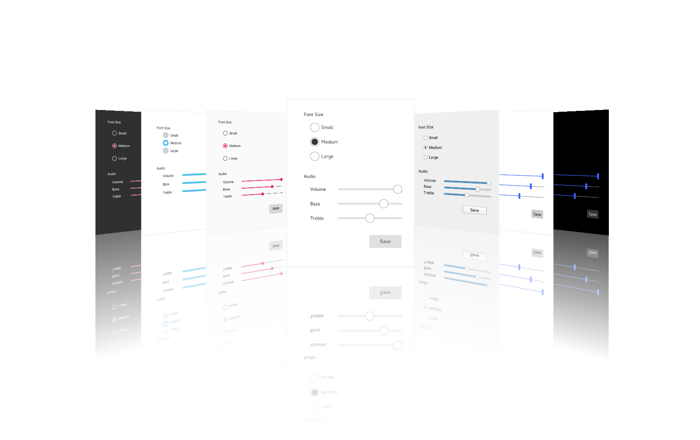

Qt Quick Controls
Qt Quick Controls provides a set of controls that can be used to build complete interfaces in Qt Quick. The module was introduced in Qt 5.7.

Qt Quick Controls comes with a selection of customizable styles. See Styling Qt Quick Controls for more details.
Using the Module
QML API
The QML types of the module are available through the QtQuick.Controls import. To use the types, add the following import statement to your .qml file:
import QtQuick.Controls
C++ API
Using a Qt module's C++ API requires linking against the module library, either directly or through other dependencies. Several build tools have dedicated support for this, including CMake and qmake.
Building with CMake
Use the find_package() command to locate the needed module component in the Qt6 package:
find_package(Qt6 REQUIRED COMPONENTS QuickControls2)
target_link_libraries(mytarget PRIVATE Qt6::QuickControls2)
For more details, see the Build with CMake overview.
Building with qmake
To configure the module for building with qmake, add the module as a value of the QT variable in the project's .pro file:
QT += quickcontrols2
Building From Source
The Qt Image Formats module is recommended, but not required. It provides support for the .webp format used by the Imagine style.
Controls
For the full list of Qt Quick Controls, see QML Types.
Button Controls
Abstract base type providing functionality common to buttons | |
Push-button that can be clicked to perform a command or answer a question | |
Check button that can be toggled on or off | |
Check button that triggers when held down long enough | |
Exclusive radio button that can be toggled on or off | |
A push-button control with rounded corners that can be clicked by the user | |
Button that can be toggled on or off | |
Button with a look suitable for a ToolBar |
Container Controls
Styled top-level window with support for a header and footer | |
Abstract base type providing functionality common to containers | |
Visual frame for a logical group of controls | |
Visual frame and title for a logical group of controls | |
Provides a horizontal header view to accompany a TableView | |
Styled page control with support for a header and footer | |
Provides a background matching with the application style and theme | |
Scrollable view | |
Lays out items with a draggable splitter between each item | |
Provides a stack-based navigation model | |
Enables the user to navigate pages by swiping sideways | |
Allows the user to switch between different views or subtasks | |
Container for context-sensitive controls | |
Offers a vertical header view to accompany a TableView |
Delegate Controls
Item delegate with a check indicator that can be toggled on or off | |
Basic item delegate that can be used in various views and controls | |
Exclusive item delegate with a radio indicator that can be toggled on or off | |
Swipable item delegate | |
Item delegate with a switch indicator that can be toggled on or off | |
A delegate that can be assigned to a TableView | |
A delegate that can be assigned to a TreeView |
Indicator Controls
Indicates background activity, for example, while content is being loaded | |
Indicates the currently active page | |
Indicates the progress of an operation | |
Vertical or horizontal interactive scroll bar | |
Vertical or horizontal non-interactive scroll indicator |
Input Controls
Combined button and popup list for selecting options | |
Circular dial that is rotated to set a value | |
Used to select a range of values by sliding two handles along a track | |
Used to select a value by sliding a handle along a track | |
Multi-line text input area | |
Single-line text input field | |
Spinnable wheel of items that can be selected |
Menu Controls
Attached type provides a way to open a context menu in a platform-appropriate manner | |
Popup that can be used as a context menu or popup menu | |
Provides a window menu bar | |
Presents a drop-down menu within a MenuBar | |
Presents an item within a Menu |
Navigation Controls
Side panel that can be opened and closed using a swipe gesture | |
Provides a stack-based navigation model | |
Enables the user to navigate pages by swiping sideways | |
Allows the user to switch between different views or subtasks | |
Button with a look suitable for a TabBar |
Popup Controls
Popup dialog with standard buttons and a title, used for short-term interaction with the user | |
Side panel that can be opened and closed using a swipe gesture | |
Popup that can be used as a context menu or popup menu | |
Base type of popup-like user interface controls | |
Provides tool tips for any control |
Separator Controls
Separates a group of items in a menu from adjacent items | |
Separates a group of items in a toolbar from adjacent items |
Versions
Qt Quick Controls 2.0 was introduced in Qt 5.7. Subsequent minor Qt releases increment the import version of the Qt Quick Controls modules by one, until Qt 5.12, where the import versions match Qt's minor version.
In Qt 6, both the major and minor versions match, and version numbers may be omitted from imports in QML. If the version is omitted, the latest version will be used.
The experimental Qt Labs modules use import version 1.0.
Qt | QtQuick | QtQuick.Controls,QtQuick.Controls.Material,QtQuick.Controls.Universal,QtQuick.Templates | Qt.labs.platform |
|---|---|---|---|
| 5.7 | 2.7 | 2.0 | 1.0 |
| 5.8 | 2.8 | 2.1 | 1.0 |
| 5.9 | 2.9 | 2.2 | 1.0 |
| 5.10 | 2.10 | 2.3 | 1.0 |
| 5.11 | 2.11 | 2.4 | 1.0 |
| 5.12 | 2.12 | 2.12 | 1.0 |
| 6.0 | 6.0 | 6.0 | 1.0 |
| ... | ... | ... | ... |
Revisions
Due to how Qt Quick Controls are implemented, new properties that are added may clash with any user-defined properties of the same name. For example, the following snippet will result in an error:
import QtQuick.Controls 2.13 ApplicationWindow { // ... ComboBox { anchors.centerIn: parent // As currentValue was added in 2.14, the versioned import above // should cause this property to be used, but instead an error is produced: // "Cannot override FINAL property" property int currentValue: 0 } }
These properties should be renamed to avoid the conflict.
Module Evolution
Qt Quick Controls was originally written with touch interfaces as the primary focus. While it is already possible to develop desktop interfaces, work is ongoing to provide a more native look and feel.
Changes to Qt Quick Controls lists important changes in the module API and functionality that were done for the Qt 6 series of Qt.
Articles and Guides
- Getting Started
- Guidelines
- Styling
- Icons
- Customization
- Using File Selectors
- Deployment
- Configuration File
- Environment Variables
Examples
Reference
Related Modules
License and Attributions
Qt Quick Controls is available under commercial licenses from The Qt Company. In addition, it is available under the GNU Lesser General Public License, version 3, or the GNU General Public License, version 2. See Qt Licensing for further details.
Furthermore, Qt Quick Controls potentially contains third party modules under the following permissive licenses:
MIT License |